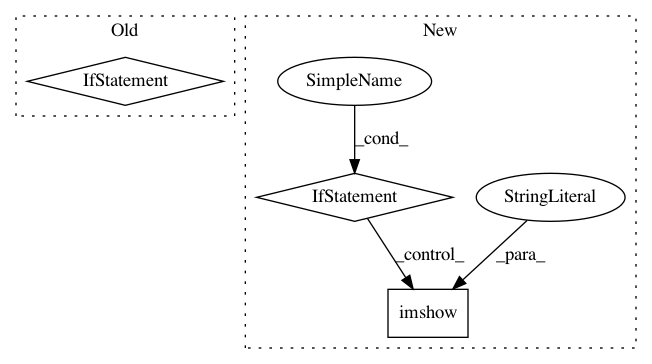

ef234844e1604d5496607fcf48886d9e556c0685,engine/training.py,,run,#Any#Any#Any#Any#,20
Before Change
print("iter {:d}, loss={:.8f},"
"error_rate={:.8f} ({:.3f}s)".format(
current_iter, loss_value, miss_value, iter_time))
if (current_iter % 20) == 0:
writer.add_summary(sess.run(write_summary_op), current_iter)
if (current_iter % param.save_every_n) == 0 and i > 0:
saver.save(sess, ckpt_name, global_step=current_iter)
print("Iter {} model saved at {}".format(
current_iter, ckpt_name))
After Change
// current_iter, loss_value, miss_value, iter_time))
print("iter {:d}, loss={:.8f} ({:.3f}s)".format(
current_iter, loss_value, iter_time))
if (current_iter % 20) == 0:
writer.add_summary(sess.run(write_summary_op), current_iter)
// Plot reconstructions for the basic autoencoder
for p in range(0,4):
plt.subplot(4, 2, 2*p+1)
temp1 = sess.run(predictions[0])
temp1 = temp1[p,:,12,:,0]
temp1.reshape(24, 24)
plt.imshow(temp1, cmap="gray")
plt.subplot(4, 2, 2*p+2)
temp2 = sess.run(predictions[1])
temp2 = temp2[p, :, 12, :, 0]
temp2.reshape(24, 24)
plt.imshow(temp2, cmap="gray")
plt.pause(0.0001)
if (current_iter % param.save_every_n) == 0 and i > 0:
saver.save(sess, ckpt_name, global_step=current_iter)
print("Iter {} model saved at {}".format(
current_iter, ckpt_name))
In pattern: SUPERPATTERN
Frequency: 3
Non-data size: 3
Instances
Project Name: NifTK/NiftyNet
Commit Name: ef234844e1604d5496607fcf48886d9e556c0685
Time: 2017-06-21
Author: r.gray@ucl.ac.uk
File Name: engine/training.py
Class Name:
Method Name: run
Project Name: soft-matter/trackpy
Commit Name: c403421f3a2878b20922f622b950c641afb72ad2
Time: 2013-03-27
Author: daniel.b.allan@gmail.com
File Name: mr/plots.py
Class Name:
Method Name: annotate
Project Name: nilearn/nilearn
Commit Name: 5d45f91146e9ee822ad3db651748d4bd1491fbc1
Time: 2013-08-26
Author: philippe.gervais@inria.fr
File Name: nisl/honorio_samaras.py
Class Name:
Method Name: